Exploring the Dash et al dataset
This data was generated in Quantifiable predictive features define epitope specific T cell receptor repertoires and further analysed in Measures of epitope binding degeneracy from T cell receptor repertoires. In this notebook we explore the dataset and re-create some of the analysis done in other works.
[1]:
import subprocess
import anarci
import logomaker
import matplotlib.pyplot as plt
import numpy as np
import pandas as pd
import seaborn as sns
import tidytcells
import umap
from matplotlib.axes import Axes
from matplotlib.figure import Figure
from sklearn.cluster import HDBSCAN, AgglomerativeClustering
from sklearn.metrics import adjusted_rand_score, roc_auc_score, v_measure_score
from sklearn.preprocessing import StandardScaler
from tcr_pmhc_predicted_structures.clustering import calculate_sequence_distances
from tcr_pmhc_predicted_structures.imgt_numbering import IMGT_CDR3
2026-06-22 15:17:51.498661: I tensorflow/core/platform/cpu_feature_guard.cc:210] This TensorFlow binary is optimized to use available CPU instructions in performance-critical operations.
To enable the following instructions: SSE4.1 SSE4.2 AVX AVX2 FMA, in other operations, rebuild TensorFlow with the appropriate compiler flags.
[2]:
CLIP_DISTANCE = 5
MIN_CLUSTER_SIZE = 4
[3]:
def plot_umap(
umap: np.ndarray,
clusters: np.ndarray,
reference: np.ndarray | None = None,
title: str | None = None,
ax: Axes | None = None,
) -> Axes:
clusters = clusters.copy()
clusters[(clusters != 'None') & (clusters != 'Background')] = (
'Cluster ' + clusters[(clusters != 'None') & (clusters != 'Background')]
)
ax = sns.scatterplot(
x=umap[(clusters != 'None') & (clusters != 'Background'), 0],
y=umap[(clusters != 'None') & (clusters != 'Background'), 1],
hue=clusters[(clusters != 'None') & (clusters != 'Background')],
style=reference[(clusters != 'None') & (clusters != 'Background')] if reference is not None else None,
alpha=0.65,
ax=ax,
)
ax = sns.scatterplot(
x=umap[clusters == 'None', 0],
y=umap[clusters == 'None', 1],
color='grey',
alpha=0.55,
label='None',
ax=ax,
)
ax = sns.scatterplot(
x=umap[clusters == 'Background', 0],
y=umap[clusters == 'Background', 1],
marker='x',
color='black',
alpha=0.55,
label='Background',
ax=ax,
)
ax.set_title(title)
ax.legend(title='Cluster')
ax.set_xlabel('UMAP 1')
ax.set_ylabel('UMAP 2')
ax.set_xticklabels([])
ax.set_yticklabels([])
return ax
def plot_umap_with_experimental_structure(
umap: np.ndarray,
clusters: np.ndarray,
experimental_structure: np.ndarray,
reference: np.ndarray | None = None,
title: str | None = None,
ax: Axes | None = None,
) -> Axes:
clusters = clusters.copy()
clusters[~experimental_structure & (clusters != 'None') & (clusters != 'Background')] = (
'Cluster ' + clusters[~experimental_structure & (clusters != 'None') & (clusters != 'Background')]
)
ax = sns.scatterplot(
x=umap[~experimental_structure & (clusters != 'None') & (clusters != 'Background'), 0],
y=umap[~experimental_structure & (clusters != 'None') & (clusters != 'Background'), 1],
hue=clusters[~experimental_structure & (clusters != 'None') & (clusters != 'Background')],
style=(
reference[~experimental_structure & (clusters != 'None') & (clusters != 'Background')]
if reference is not None
else None
),
alpha=0.65,
ax=ax,
)
ax = sns.scatterplot(
x=umap[clusters == 'None', 0],
y=umap[clusters == 'None', 1],
color='grey',
alpha=0.55,
label='None',
ax=ax,
)
ax = sns.scatterplot(
x=umap[clusters == 'Background', 0],
y=umap[clusters == 'Background', 1],
marker='x',
color='black',
alpha=0.55,
label='Background',
ax=ax,
)
ax = sns.scatterplot(
x=umap[experimental_structure, 0],
y=umap[experimental_structure, 1],
marker='^',
color='red',
label='Experimental Structure',
ax=ax,
)
ax.set_title(title)
ax.legend(title='Cluster')
ax.set_xlabel('UMAP 1')
ax.set_ylabel('UMAP 2')
ax.set_xticklabels([])
ax.set_yticklabels([])
return ax
def plot_umap_with_validation(
umap: np.ndarray, status: np.ndarray, background: np.ndarray | None = None, ax: Axes | None = None
) -> Axes:
if background is None:
background = np.repeat(a=False, repeats=len(status))
else:
sns.scatterplot(
x=umap[background, 0], y=umap[background, 1], color='grey', marker='x', label='Background', ax=ax
)
ax = sns.scatterplot(
x=umap[pd.isna(status) & ~background, 0], y=umap[pd.isna(status) & ~background, 1], color='grey', ax=ax
)
ax = sns.scatterplot(x=umap[:, 0], y=umap[:, 1], hue=status, ax=ax)
ax.set_xticks(ax.get_xticks())
ax.set_xticklabels('')
ax.set_xlabel('UMAP 1')
ax.set_yticks(ax.get_yticks())
ax.set_yticklabels('')
ax.set_ylabel('UMAP 2')
return ax
def align_sequences(sequences: list[str]) -> list[str]:
child = subprocess.Popen(
[
'/usr/bin/env',
'mafft-linsi',
'--quiet',
'--op',
'2',
'--ep',
'10',
'--amino',
'-',
],
stdin=subprocess.PIPE,
stdout=subprocess.PIPE,
)
child.stdin.write('\n'.join(f'>{idx}\n{sequence}' for idx, sequence in enumerate(sequences)).encode())
child_out = child.communicate()[0].decode('utf8')
aligned_sequences = [line.strip() for line in child_out.split('\n') if line and not line.startswith('>')]
child.stdin.close()
return aligned_sequences
def make_logo_plot(cluster: pd.DataFrame, *, save: bool = False, save_name: str | None = None) -> None:
fig, axes = plt.subplots(2, 3, figsize=(10, 5), gridspec_kw={'width_ratios': (1, 5, 1), 'wspace': 0.1}, sharey=True)
fig.suptitle(f'Cluster {cluster.name}')
for chain_type, axes_row in zip(('a', 'b'), axes, strict=True):
axes_row[0].set_ylabel({'a': 'Alpha Chain', 'b': 'Beta Chain'}[chain_type], fontsize=14)
aligned_sequences = align_sequences(cluster[f'cdr3_{chain_type}_aa'])
probs = logomaker.alignment_to_matrix(aligned_sequences, to_type='counts')
logomaker.Logo(probs, color_scheme='chemistry', show_spines=False, baseline_width=0.0, ax=axes_row[1])
axes_row[1].set_xticks([])
axes_row[1].set_yticks([])
counts_v = cluster[f'v_{chain_type}_gene'].value_counts()
counts_j = cluster[f'j_{chain_type}_gene'].value_counts()
for ax, counts in zip([axes_row[0], axes_row[2]], [counts_v, counts_j], strict=True):
previous_count = 0
for gene_name, cum_count in counts.cumsum().items():
logomaker.Glyph(0.5, gene_name[3:], previous_count, cum_count, ax=ax)
previous_count = cum_count
ax.set_xticks([])
ax.set_yticks([])
ax.spines[:].set_visible(False)
if save:
plt.savefig(save_name.format(cluster_name=cluster.name))
def plot_sequence_distances(
distance_matrix: np.ndarray,
cluster_colours: np.ndarray,
cluster_order: np.ndarray,
cluster_counts: np.ndarray,
new_order: np.ndarray,
subject_colours: np.ndarray,
epitope_colours: np.ndarray | None = None,
) -> tuple[Figure, np.ndarray[Axes]]:
if epitope_colours is not None:
fig, axes = plt.subplots(1, 4, gridspec_kw={'width_ratios': [1, 1, 1, 20]})
else:
fig, axes = plt.subplots(1, 3, gridspec_kw={'width_ratios': [1, 1, 20]})
idx = 0
axes[idx].imshow(subject_colours, aspect='auto')
axes[idx].set_ylabel('Subject', fontsize=14)
axes[idx].set_xticks([])
axes[idx].set_xticklabels('')
axes[idx].set_yticks([])
axes[idx].set_yticklabels('')
idx += 1
if epitope_colours is not None:
axes[idx].imshow(epitope_colours, aspect='auto')
axes[idx].set_ylabel('Epitope', fontsize=14)
axes[idx].set_xticks([])
axes[idx].set_xticklabels('')
axes[idx].set_yticks([])
axes[idx].set_yticklabels('')
idx += 1
axes[idx].imshow(cluster_colours, aspect='auto')
axes[idx].set_ylabel('Cluster', fontsize=14)
axes[idx].set_xticks([])
axes[idx].set_xticklabels('')
axes[idx].set_yticks([])
axes[idx].set_yticklabels('')
accumulation = 0
for cluster in cluster_order:
cluster_size = cluster_counts[cluster]
if cluster_size >= MIN_CLUSTER_SIZE:
position = cluster_counts[cluster] // 2 + accumulation
axes[idx].text(
x=0.025,
y=position,
s=str(cluster),
va='center',
ha='center',
fontsize=8,
)
accumulation += cluster_size
idx += 1
sns.heatmap(
np.clip(distance_matrix[new_order, :][:, new_order], a_min=None, a_max=CLIP_DISTANCE),
cmap='viridis_r',
ax=axes[idx],
)
axes[idx].set_xlabel(r'CDR3$\alpha$', fontsize=14)
axes[idx].set_ylabel(r'CDR3$\beta$', fontsize=14, rotation=270, labelpad=15)
axes[idx].yaxis.set_label_position('right')
axes[idx].set_xticks([])
axes[idx].set_xticklabels('')
axes[idx].set_yticks([])
axes[idx].set_yticklabels('')
cbar = axes[idx].collections[0].colorbar
cbar.set_label('Sequence Levenshtein Distance', fontsize=14, rotation=270, labelpad=15)
cbar.set_ticks(cbar.get_ticks())
cbar.set_ticklabels(
[f'{int(label)}' if label != CLIP_DISTANCE else f'>{CLIP_DISTANCE}' for label in cbar.get_ticks()]
)
fig.set_layout_engine('tight')
return fig, axes
[4]:
dash = pd.read_csv('../data/external/dash_human.csv')
dash.index.name = 'id'
dash = dash.reset_index()
dash['id'] = 'dash_' + dash['id'].astype(str)
[5]:
dash = dash.dropna()
[6]:
dash['subject'].value_counts().plot.bar()
plt.ylabel('Count')
plt.show()
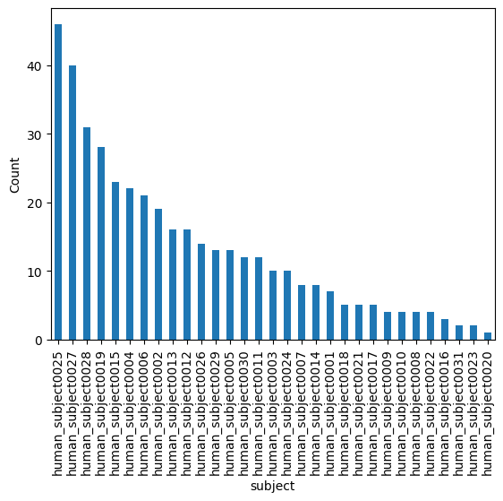
[7]:
dash.value_counts('epitope')
[7]:
epitope
M1 249
BMLF 92
pp65 67
Name: count, dtype: int64
[8]:
epitope_info = pd.DataFrame(
columns=['name', 'species', 'mhc', 'peptide_seq', 'virus'],
data=[
['BMLF', 'human', 'HLA-A*02:01', 'GLCTLVAML', 'EBV'],
['M1', 'human', 'HLA-A*02:01', 'GILGFVFTL', 'IAV'],
['pp65', 'human', 'HLA-A*02:01', 'NLVPMVATV', 'CMV'],
],
)
epitope_info.set_index('name')
[8]:
| species | mhc | peptide_seq | virus | |
|---|---|---|---|---|
| name | ||||
| BMLF | human | HLA-A*02:01 | GLCTLVAML | EBV |
| M1 | human | HLA-A*02:01 | GILGFVFTL | IAV |
| pp65 | human | HLA-A*02:01 | NLVPMVATV | CMV |
[9]:
sequences_with_negatives = pd.read_csv('../data/interim/sequences_dash_with_negatives.csv')
sequences_with_negatives = sequences_with_negatives.merge(dash, how='left', on='id')
sequences_with_negatives.loc[sequences_with_negatives['subject'].isna(), 'subject'] = 'Background'
sequences_with_negatives.loc[sequences_with_negatives['epitope'].isna(), 'epitope'] = 'Background'
[10]:
def get_cdr3(sequence: str) -> str:
numbering, _ = anarci.number(sequence)
cdr3 = ''.join(amino_acid for (seq_id, _), amino_acid in numbering if amino_acid != '-' and seq_id in IMGT_CDR3)
return tidytcells.junction.standardise(cdr3)
sequences_with_negatives['cdr3_alpha'] = sequences_with_negatives['tcr_alpha_chain'].apply(get_cdr3)
sequences_with_negatives['cdr3_beta'] = sequences_with_negatives['tcr_beta_chain'].apply(get_cdr3)
[11]:
sequences_with_negatives = sequences_with_negatives.merge(
epitope_info[['name', 'mhc', 'peptide_seq', 'virus']], how='left', left_on='peptide', right_on='peptide_seq'
)
[12]:
distance_matrix = calculate_sequence_distances(
sequences_with_negatives['cdr3_alpha'].tolist(), sequences_with_negatives['cdr3_beta'].tolist()
)
cdr3_distance_matrix = distance_matrix + distance_matrix.T
[13]:
clusters = AgglomerativeClustering(
n_clusters=None, distance_threshold=6, compute_full_tree=True, linkage='complete', metric='precomputed'
).fit_predict(cdr3_distance_matrix)
[14]:
cluster_counts = {}
for cluster in clusters:
if cluster not in cluster_counts:
cluster_counts[cluster] = 1
else:
cluster_counts[cluster] += 1
cluster_order = [
cluster
for cluster, _ in sorted(
sorted(cluster_counts.items(), key=lambda item: item[0]), key=lambda item: item[1], reverse=True
)
]
[15]:
clusters_filtered = np.array(
[str(cluster) if cluster_counts[cluster] >= MIN_CLUSTER_SIZE else 'None' for cluster in clusters]
)
[16]:
new_order = []
for cluster in cluster_order:
(indices,) = np.where(clusters == cluster)
new_order.extend(indices)
new_order = np.array(new_order)
[17]:
unique_clusters, inverse = np.unique(clusters[new_order], return_inverse=True)
palette = sns.color_palette('tab20')
num_colours = len(palette)
cluster_to_colour = {cluster: palette[i % num_colours] for i, cluster in enumerate(unique_clusters)}
cluster_colours = np.array([[cluster_to_colour[cluster]] for cluster in clusters[new_order]])
[18]:
unique_subjects = sorted(sequences_with_negatives['subject'].unique())
subject_to_colour = {subject: palette[i % num_colours] for i, subject in enumerate(unique_subjects)}
subject_colours = np.array(
[[subject_to_colour[subject]] for subject in sequences_with_negatives['subject'].to_numpy()[new_order]]
)
[19]:
unique_epitopes = sorted(sequences_with_negatives['epitope'].unique())
epitope_to_colour = {epitope: palette[i % num_colours] for i, epitope in enumerate(unique_epitopes)}
epitope_colours = np.array(
[[epitope_to_colour[epitope]] for epitope in sequences_with_negatives['epitope'].to_numpy()[new_order]]
)
[ ]:
plot_sequence_distances(
distance_matrix, cluster_colours, cluster_order, cluster_counts, new_order, subject_colours, epitope_colours
)
plt.show()
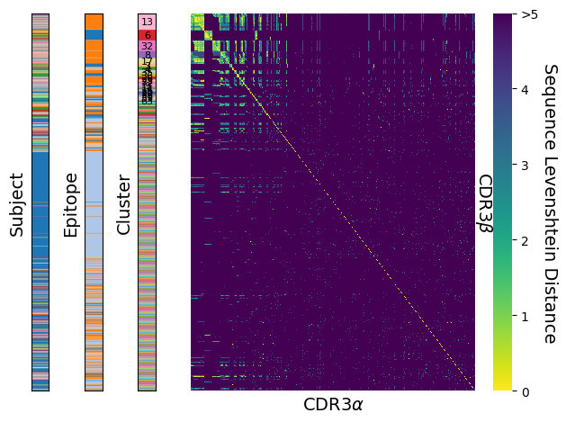
[21]:
sequence_umap = umap.UMAP(n_jobs=1, random_state=123).fit_transform(distance_matrix)
[ ]:
ax = plot_umap(sequence_umap, pd.Series(clusters_filtered), title='Sequences')
sns.move_legend(ax, 'upper left', bbox_to_anchor=(1, 1))
plt.show()
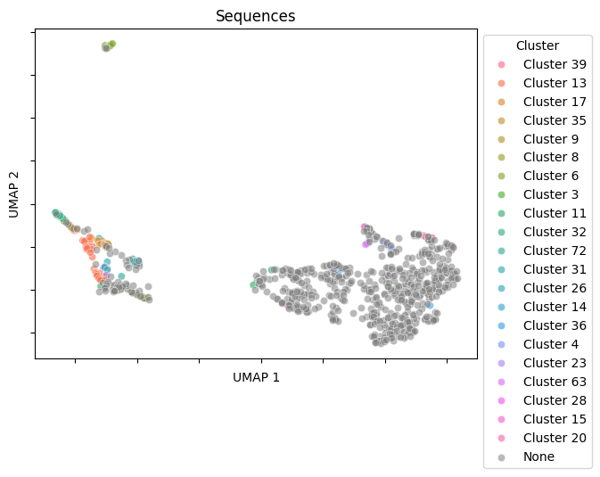
[23]:
fig, axes = plt.subplots(1, 3, figsize=(15, 5))
fig.suptitle('Effect of CDR3 length on clustering')
sns.scatterplot(
x=sequence_umap[:, 0],
y=sequence_umap[:, 1],
hue=sequences_with_negatives['cdr3_alpha'].str.len().astype(str),
ax=axes[0],
)
axes[0].legend(title=r'CDR3$\alpha$')
axes[0].set_yticklabels([])
axes[0].set_xticklabels([])
axes[0].set_xlabel('UMAP 1')
axes[0].set_ylabel('UMAP 2')
sns.scatterplot(
x=sequence_umap[:, 0],
y=sequence_umap[:, 1],
hue=sequences_with_negatives['cdr3_beta'].str.len().astype(str),
ax=axes[1],
)
axes[1].legend(title=r'CDR3$\beta$')
axes[1].set_yticklabels([])
axes[1].set_xticklabels([])
axes[1].set_xlabel('UMAP 1')
axes[1].set_ylabel('UMAP 2')
sns.scatterplot(
x=sequence_umap[:, 0],
y=sequence_umap[:, 1],
hue=(sequences_with_negatives['cdr3_alpha'].str.len() + sequences_with_negatives['cdr3_beta'].str.len()).astype(
str
),
ax=axes[2],
)
axes[2].legend(title=r'Combined')
axes[2].set_yticklabels([])
axes[2].set_xticklabels([])
axes[2].set_xlabel('UMAP 1')
axes[2].set_ylabel('UMAP 2')
plt.show()
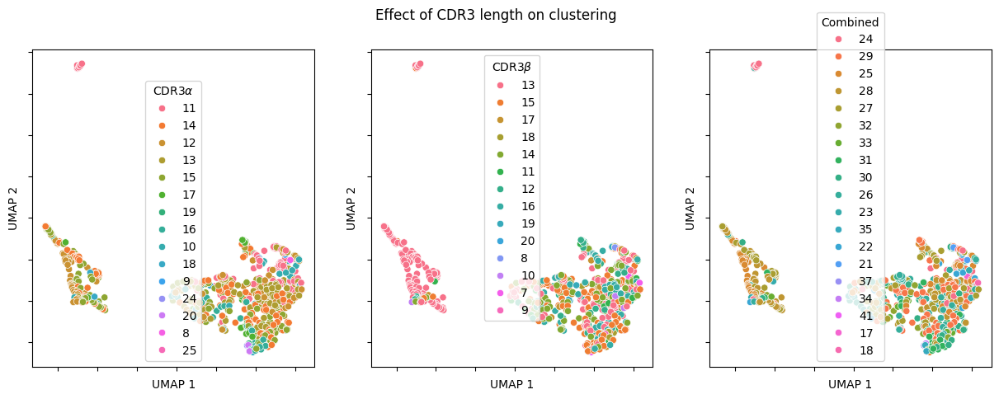
[24]:
cluster_purities = (
sequences_with_negatives.groupby(clusters_filtered)['epitope']
.value_counts(normalize=True)
.reset_index()
.groupby('level_0')
.filter(lambda group: group['epitope'].nunique() > 1 and 'Background' not in group['epitope']) # noqa: PD101
.groupby('level_0')
.agg({'proportion': 'max'})
.reset_index()
.query("level_0 != 'None'")
)
cluster_purities['proportion'].plot.hist()
purity_mean = cluster_purities['proportion'].mean()
plt.axvline(purity_mean, color='red', linestyle='dashed')
plt.text(purity_mean + 0.01, plt.ylim()[1] - 0.5, f'Average: {purity_mean * 100: .1f}%')
plt.title('Cluster Purity')
plt.show()
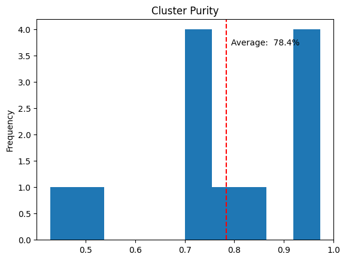
M1 Epitope Analysis
[25]:
dash_m1 = dash.query("epitope == 'M1'").copy()
[26]:
distance_matrix = calculate_sequence_distances(dash_m1['cdr3_a_aa'].tolist(), dash_m1['cdr3_b_aa'].tolist())
cdr3_distance_matrix = distance_matrix + distance_matrix.T
[27]:
clusters = AgglomerativeClustering(
n_clusters=None, distance_threshold=6, compute_full_tree=True, linkage='complete', metric='precomputed'
).fit_predict(cdr3_distance_matrix)
[28]:
cluster_counts = {}
for cluster in clusters:
if cluster not in cluster_counts:
cluster_counts[cluster] = 1
else:
cluster_counts[cluster] += 1
cluster_order = [
cluster
for cluster, _ in sorted(
sorted(cluster_counts.items(), key=lambda item: item[0]), key=lambda item: item[1], reverse=True
)
]
[29]:
new_order = []
for cluster in cluster_order:
(indices,) = np.where(clusters == cluster)
new_order.extend(indices)
new_order = np.array(new_order)
[30]:
unique_clusters, inverse = np.unique(clusters[new_order], return_inverse=True)
palette = sns.color_palette('tab20')
num_colours = len(palette)
cluster_to_colour = {cluster: palette[i % num_colours] for i, cluster in enumerate(unique_clusters)}
cluster_colours = np.array([[cluster_to_colour[cluster]] for cluster in clusters[new_order]])
[31]:
unique_subjects = sorted(dash_m1['subject'].unique())
subject_to_colour = {subject: palette[i % num_colours] for i, subject in enumerate(unique_subjects)}
subject_colours = np.array([[subject_to_colour[subject]] for subject in dash_m1['subject'].to_numpy()[new_order]])
[ ]:
plot_sequence_distances(distance_matrix, cluster_colours, cluster_order, cluster_counts, new_order, subject_colours)
plt.show()
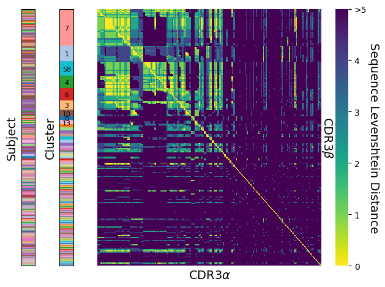
[33]:
plt.figure(figsize=(25, 6))
plt.bar([str(cluster) for cluster in cluster_order], [cluster_counts[cluster] for cluster in cluster_order])
plt.xlabel('Cluster', fontsize=12)
plt.ylabel('Number of TCRs', fontsize=12)
plt.axhline(MIN_CLUSTER_SIZE - 1, color='red', linestyle='--')
plt.show()
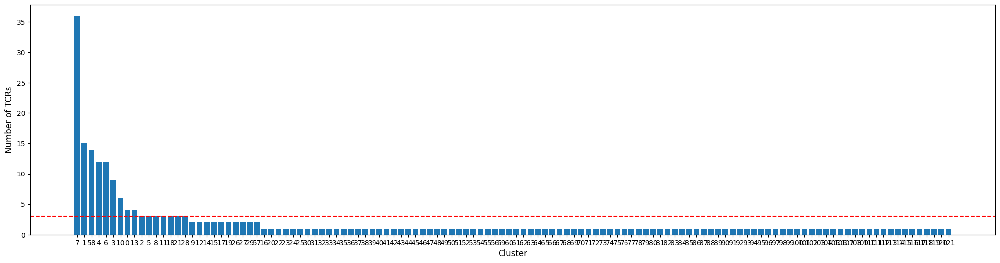
[34]:
clusters_filtered = np.array([cluster if cluster_counts[cluster] >= MIN_CLUSTER_SIZE else -1 for cluster in clusters])
[35]:
dash_m1['cluster'] = clusters_filtered
dash_m1['cluster'] = dash_m1['cluster'].astype(str)
dash_m1['cluster'] = dash_m1['cluster'].replace('-1', 'None')
[ ]:
dash_m1.query("cluster != 'None'").groupby('cluster').apply(make_logo_plot, include_groups=False)
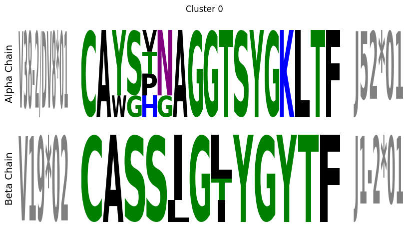
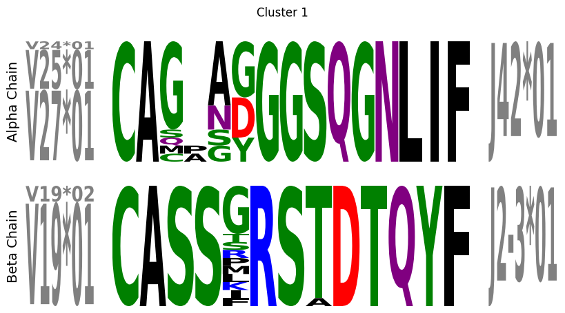
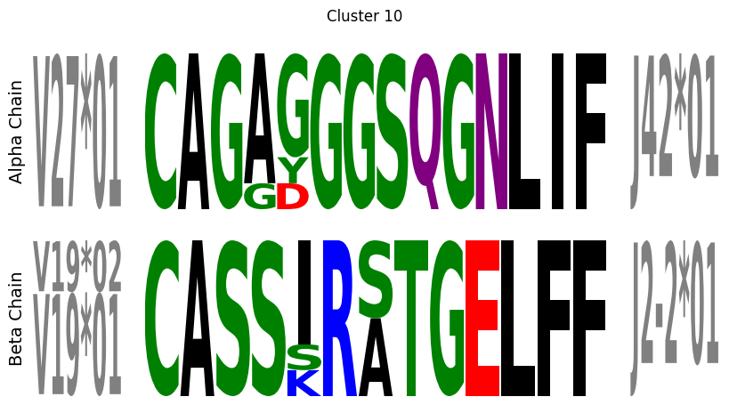
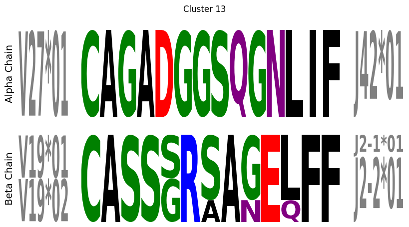
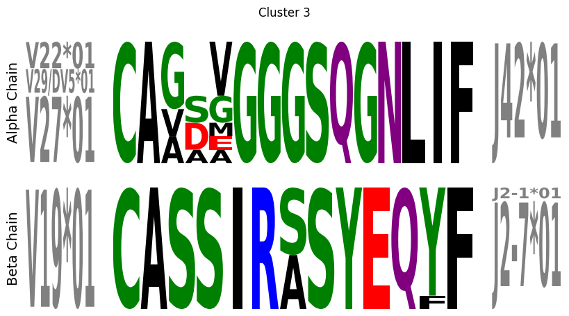
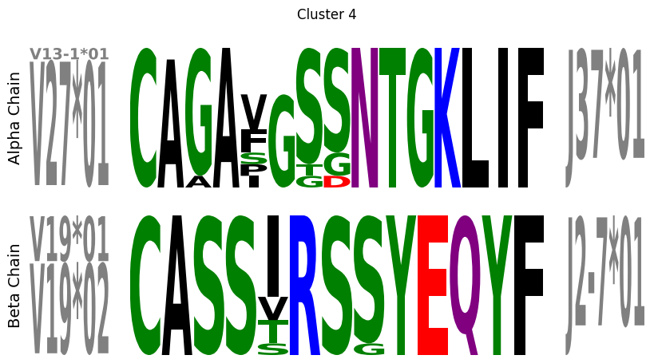
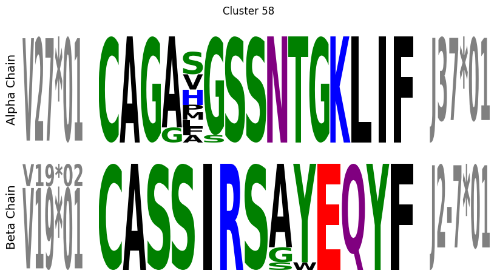
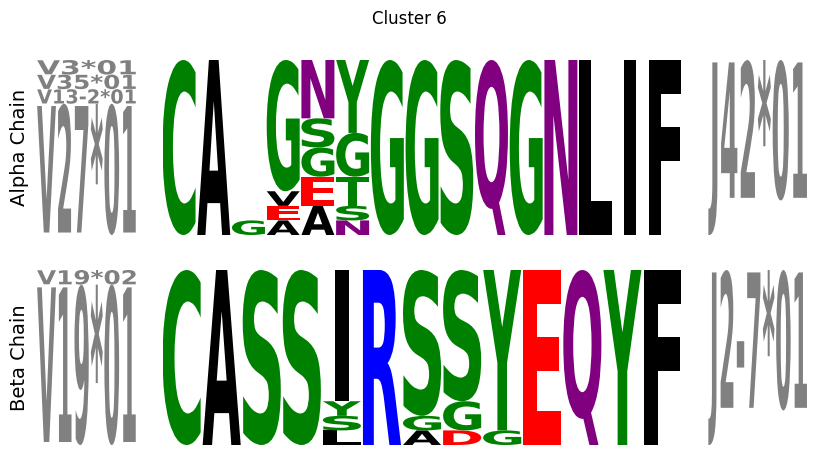
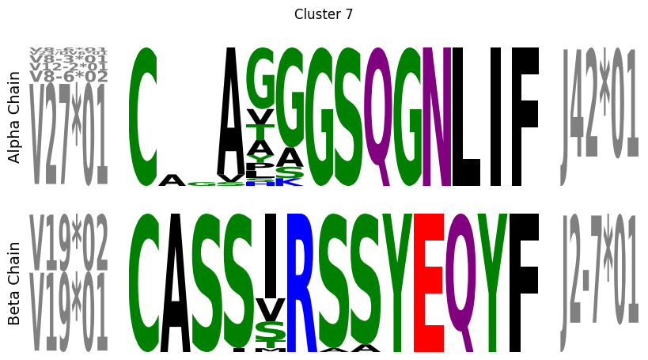
[37]:
sequence_umap = umap.UMAP(n_jobs=1, random_state=123).fit_transform(distance_matrix)
[ ]:
plot_umap(sequence_umap, dash_m1['cluster'], title='Sequences')
plt.show()
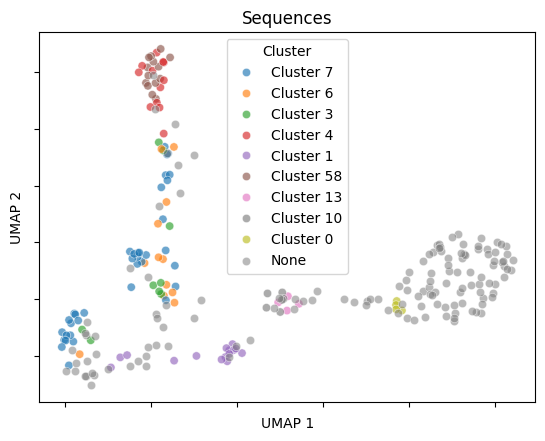
[39]:
fig, axes = plt.subplots(1, 3, figsize=(15, 5))
fig.suptitle('Effect of CDR3 length on clustering')
sns.scatterplot(
x=sequence_umap[:, 0], y=sequence_umap[:, 1], hue=dash_m1['cdr3_a_aa'].str.len().astype(str), ax=axes[0]
)
axes[0].legend(title=r'CDR3$\alpha$')
axes[0].set_yticklabels([])
axes[0].set_xticklabels([])
axes[0].set_xlabel('UMAP 1')
axes[0].set_ylabel('UMAP 2')
sns.scatterplot(
x=sequence_umap[:, 0], y=sequence_umap[:, 1], hue=dash_m1['cdr3_b_aa'].str.len().astype(str), ax=axes[1]
)
axes[1].legend(title=r'CDR3$\beta$')
axes[1].set_yticklabels([])
axes[1].set_xticklabels([])
axes[1].set_xlabel('UMAP 1')
axes[1].set_ylabel('UMAP 2')
sns.scatterplot(
x=sequence_umap[:, 0],
y=sequence_umap[:, 1],
hue=(dash_m1['cdr3_a_aa'].str.len() + dash_m1['cdr3_b_aa'].str.len()).astype(str),
ax=axes[2],
)
axes[2].legend(title=r'Combined')
axes[2].set_yticklabels([])
axes[2].set_xticklabels([])
axes[2].set_xlabel('UMAP 1')
axes[2].set_ylabel('UMAP 2')
plt.show()
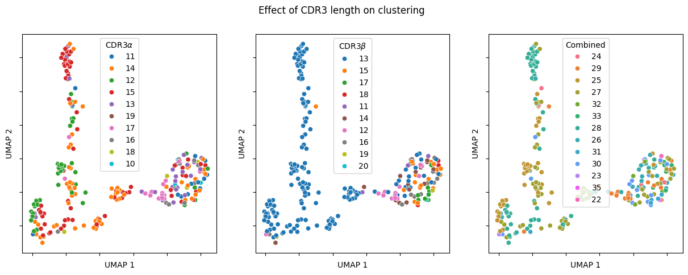
[40]:
sequences_with_negatives_m1 = sequences_with_negatives.query("name == 'M1'")
[41]:
sequences_with_negatives_m1.merge(dash_m1[['id', 'cluster']], how='left', on='id')
sequences_with_negatives_m1 = sequences_with_negatives_m1.merge(dash_m1[['id', 'cluster']], how='left', on='id')
sequences_with_negatives_m1['cluster'] = sequences_with_negatives_m1['cluster'].fillna('Background')
[42]:
distance_matrix = calculate_sequence_distances(
sequences_with_negatives_m1['cdr3_alpha'].tolist(), sequences_with_negatives_m1['cdr3_beta'].tolist()
)
cdr3_distance_matrix = distance_matrix + distance_matrix.T
[43]:
sequence_umap_with_background = umap.UMAP(n_jobs=1, random_state=123).fit_transform(distance_matrix)
[ ]:
plot_umap(sequence_umap_with_background, sequences_with_negatives_m1['cluster'], title='Sequences')
plt.show()
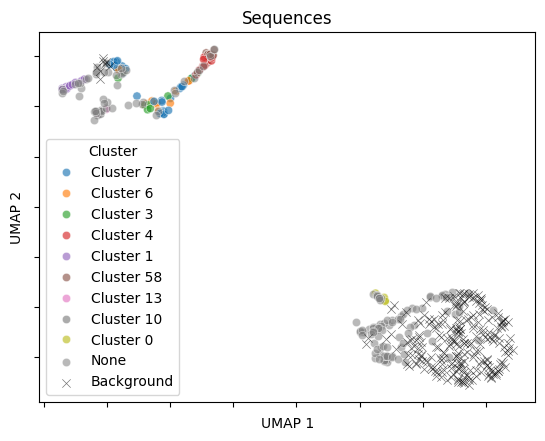
BMLF Epitope Analysis
[45]:
dash_bmlf = dash.query("epitope == 'BMLF'").copy()
[46]:
distance_matrix = calculate_sequence_distances(dash_bmlf['cdr3_a_aa'].tolist(), dash_bmlf['cdr3_b_aa'].tolist())
cdr3_distance_matrix = distance_matrix + distance_matrix.T
[47]:
clusters = AgglomerativeClustering(
n_clusters=None, distance_threshold=6, compute_full_tree=True, linkage='complete', metric='precomputed'
).fit_predict(cdr3_distance_matrix)
[48]:
cluster_counts = {}
for cluster in clusters:
if cluster not in cluster_counts:
cluster_counts[cluster] = 1
else:
cluster_counts[cluster] += 1
cluster_order = [
cluster
for cluster, _ in sorted(
sorted(cluster_counts.items(), key=lambda item: item[0]), key=lambda item: item[1], reverse=True
)
]
[49]:
new_order = []
for cluster in cluster_order:
(indices,) = np.where(clusters == cluster)
new_order.extend(indices)
new_order = np.array(new_order)
[50]:
unique_clusters, inverse = np.unique(clusters[new_order], return_inverse=True)
palette = sns.color_palette('tab20')
num_colours = len(palette)
cluster_to_colour = {cluster: palette[i % num_colours] for i, cluster in enumerate(unique_clusters)}
cluster_colours = np.array([[cluster_to_colour[cluster]] for cluster in clusters[new_order]])
[51]:
unique_subjects = sorted(dash_bmlf['subject'].unique())
subject_to_colour = {subject: palette[i % num_colours] for i, subject in enumerate(unique_subjects)}
subject_colours = np.array([[subject_to_colour[subject]] for subject in dash_bmlf['subject'].to_numpy()[new_order]])
[ ]:
plot_sequence_distances(distance_matrix, cluster_colours, cluster_order, cluster_counts, new_order, subject_colours)
plt.show()
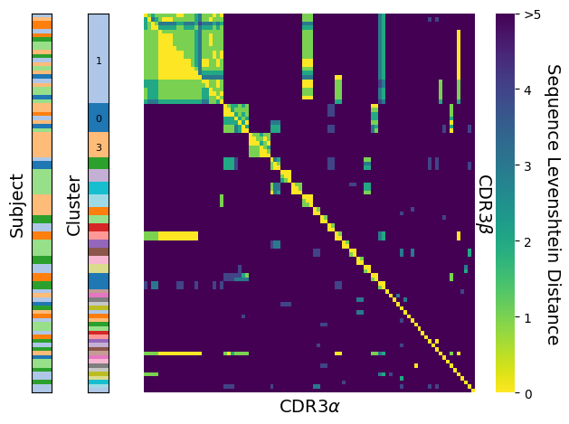
[53]:
plt.figure(figsize=(12, 6))
plt.bar([str(cluster) for cluster in cluster_order], [cluster_counts[cluster] for cluster in cluster_order])
plt.xlabel('Cluster', fontsize=12)
plt.ylabel('Number of TCRs', fontsize=12)
plt.axhline(MIN_CLUSTER_SIZE - 1, color='red', linestyle='--')
plt.show()
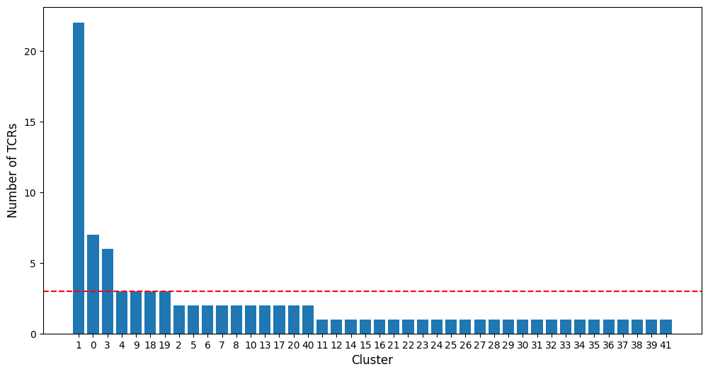
[54]:
clusters_filtered = [cluster if cluster_counts[cluster] >= MIN_CLUSTER_SIZE else -1 for cluster in clusters]
[55]:
dash_bmlf['cluster'] = clusters_filtered
dash_bmlf['cluster'] = dash_bmlf['cluster'].astype(str)
dash_bmlf['cluster'] = dash_bmlf['cluster'].replace('-1', 'None')
[ ]:
dash_bmlf.query("cluster != 'None'").groupby('cluster').apply(make_logo_plot, include_groups=False)
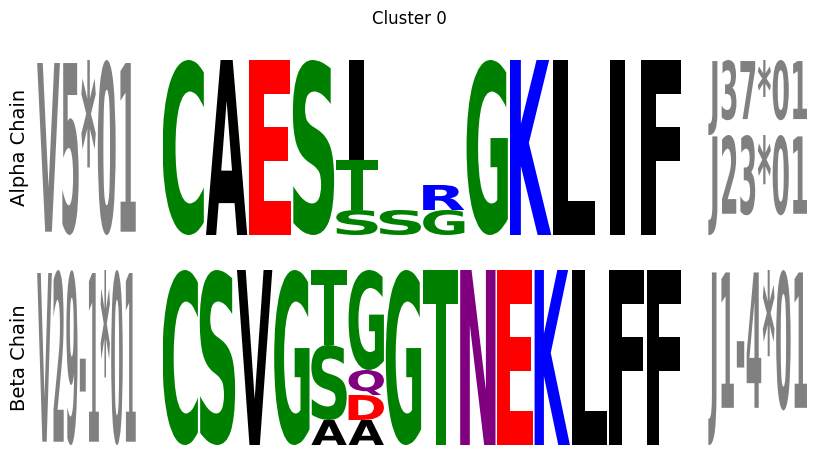
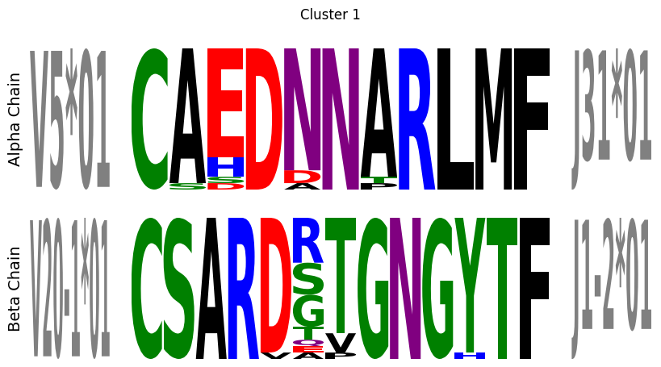
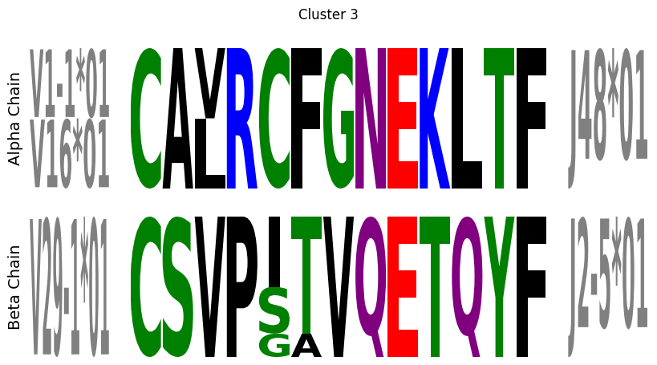
[57]:
sequence_umap = umap.UMAP(n_jobs=1, random_state=123).fit_transform(distance_matrix)
[58]:
structure_summary = pd.read_csv('../data/interim/structures_summary.csv')
structure_summary['name'] = structure_summary['path'].str.replace('.pdb', '')
structure_summary = structure_summary.set_index('name')
bmlf_structures = structure_summary.query("peptide == 'GLCTLVAML'")
bmlf_structures
[58]:
| path | pdb | Achain | Bchain | antigen_chain | mhc_chain1 | mhc_chain2 | mhc_type | cdr1_alpha | cdr2_alpha | ... | cdr1_beta | cdr2_beta | cdr3_beta | v_alpha | v_beta | peptide | mhc1 | mhc2 | species | mhc_pseudo | |
|---|---|---|---|---|---|---|---|---|---|---|---|---|---|---|---|---|---|---|---|---|---|
| name | |||||||||||||||||||||
| 3o4l_DECAB | 3o4l_DECAB.pdb | 3o4l | D | E | C | A | NaN | MH1 | DSSSTY | IFSNMDM | ... | DFQATT | SNEGSKA | SARDGTGNGYT | TRAV5 | TRBV20 | GLCTLVAML | HLA-A*02:01 | B2M | Human | GERKKAHQTRVGKAHVEQLAYEGTEW |
1 rows × 21 columns
[59]:
dash_bmlf['has_structure'] = dash_bmlf.apply(
lambda row: (
(row.cdr3_a_aa[1:-1] == bmlf_structures.iloc[0]['cdr3_alpha'])
and (row.cdr3_b_aa[1:-1] == bmlf_structures.iloc[0]['cdr3_beta'])
),
axis=1,
)
[60]:
tcrvdb = pd.read_csv('../data/interim/tcrvdb.csv', index_col=0)
[61]:
tcrvdb_glc = tcrvdb[tcrvdb['peptide'] == 'GLCTLVAML']
[62]:
tcrvdb_glc = tcrvdb_glc[
['v_gene_alpha', 'cdr3_alpha_aa', 'j_gene_alpha', 'v_gene_beta', 'cdr3_beta_aa', 'j_gene_beta', 'status']
]
[63]:
dash_bmlf = dash_bmlf.merge(
tcrvdb_glc,
how='left',
left_on=['v_a_gene', 'cdr3_a_aa', 'j_a_gene', 'v_b_gene', 'cdr3_b_aa', 'j_b_gene'],
right_on=['v_gene_alpha', 'cdr3_alpha_aa', 'j_gene_alpha', 'v_gene_beta', 'cdr3_beta_aa', 'j_gene_beta'],
)
[64]:
dash_bmlf['status'].value_counts(dropna=False)
[64]:
status
NaN 45
Validated 35
Non-validated 12
Name: count, dtype: int64
[ ]:
plot_umap(sequence_umap, dash_bmlf['cluster'], reference=dash_bmlf['has_structure'], title='Sequences')
plt.show()
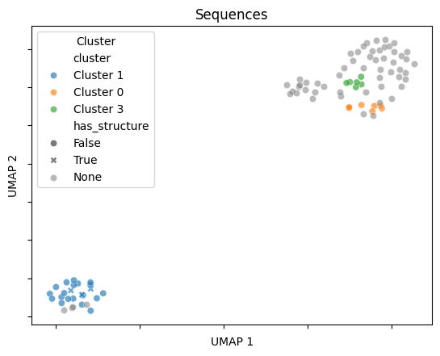
[66]:
fig, axes = plt.subplots(1, 3, figsize=(15, 5))
fig.suptitle('Effect of CDR3 length on clustering')
sns.scatterplot(
x=sequence_umap[:, 0], y=sequence_umap[:, 1], hue=dash_bmlf['cdr3_a_aa'].str.len().astype(str), ax=axes[0]
)
axes[0].legend(title=r'CDR3$\alpha$')
axes[0].set_yticklabels([])
axes[0].set_xticklabels([])
axes[0].set_xlabel('UMAP 1')
axes[0].set_ylabel('UMAP 2')
sns.scatterplot(
x=sequence_umap[:, 0], y=sequence_umap[:, 1], hue=dash_bmlf['cdr3_b_aa'].str.len().astype(str), ax=axes[1]
)
axes[1].legend(title=r'CDR3$\beta$')
axes[1].set_yticklabels([])
axes[1].set_xticklabels([])
axes[1].set_xlabel('UMAP 1')
axes[1].set_ylabel('UMAP 2')
sns.scatterplot(
x=sequence_umap[:, 0],
y=sequence_umap[:, 1],
hue=(dash_bmlf['cdr3_a_aa'].str.len() + dash_bmlf['cdr3_b_aa'].str.len()).astype(str),
ax=axes[2],
)
axes[2].legend(title=r'Combined')
axes[2].set_yticklabels([])
axes[2].set_xticklabels([])
axes[2].set_xlabel('UMAP 1')
axes[2].set_ylabel('UMAP 2')
plt.show()
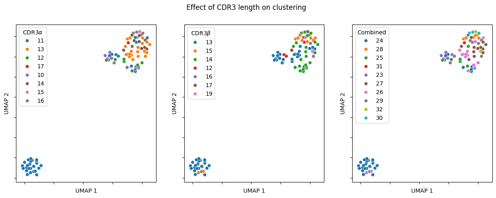
[67]:
plot_umap_with_validation(sequence_umap, dash_bmlf['status'].to_numpy())
plt.show()
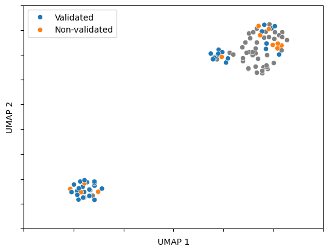
[68]:
sequences_with_negatives_bmlf = sequences_with_negatives.query("name == 'BMLF'")
[69]:
sequences_with_negatives_bmlf = sequences_with_negatives_bmlf.merge(
dash_bmlf[['id', 'cluster', 'has_structure']], how='left', on='id'
)
sequences_with_negatives_bmlf['cluster'] = sequences_with_negatives_bmlf['cluster'].fillna('Background')
[70]:
sequences_with_negatives_bmlf = sequences_with_negatives_bmlf.merge(
tcrvdb_glc,
how='left',
left_on=['v_a_gene', 'cdr3_a_aa', 'j_a_gene', 'v_b_gene', 'cdr3_b_aa', 'j_b_gene'],
right_on=['v_gene_alpha', 'cdr3_alpha_aa', 'j_gene_alpha', 'v_gene_beta', 'cdr3_beta_aa', 'j_gene_beta'],
)
[71]:
distance_matrix = calculate_sequence_distances(
sequences_with_negatives_bmlf['cdr3_alpha'].tolist(), sequences_with_negatives_bmlf['cdr3_beta'].tolist()
)
cdr3_distance_matrix = distance_matrix + distance_matrix.T
[72]:
sequence_umap_with_background = umap.UMAP(n_jobs=1, random_state=123).fit_transform(distance_matrix)
[ ]:
plot_umap(
sequence_umap_with_background,
sequences_with_negatives_bmlf['cluster'],
reference=sequences_with_negatives_bmlf['has_structure'],
title='Sequences',
)
plt.show()
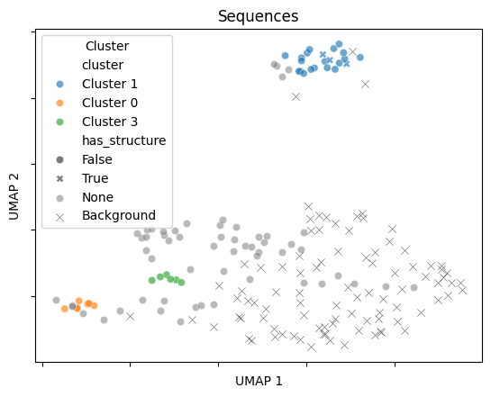
[74]:
plot_umap_with_validation(
sequence_umap_with_background,
sequences_with_negatives_bmlf['status'].to_numpy(),
background=(sequences_with_negatives_bmlf['cluster'] == 'Background').to_numpy(),
)
plt.show()
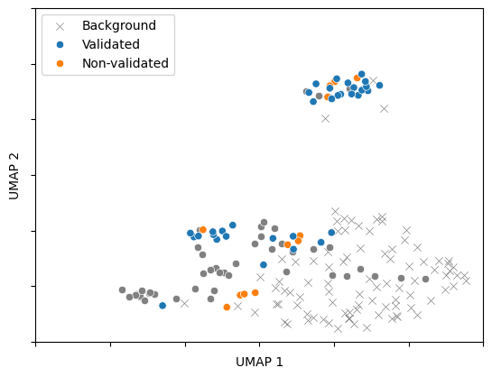
Structure Prediction Features
[75]:
def is_constant(column: pd.Series) -> bool:
return (column == column.iloc[0]).all()
def drop_constant_columns(df: pd.DataFrame) -> pd.DataFrame:
df = df.copy()
return df[[column_name for column_name in df.columns if not is_constant(df[column_name])]]
Confidence Scores
[76]:
confidence_scores = pd.read_csv('../data/interim/confidence_scores_af3_af3_tcrmodel2_dash_bmlf.csv')
confidence_scores['top_rank'] = False
confidence_scores.loc[confidence_scores.groupby('name')['ranking_score'].idxmax(), 'top_rank'] = True
[77]:
confidence_scores = confidence_scores.merge(dash_bmlf, how='left', left_on='name', right_on='id')
confidence_scores['cluster'] = confidence_scores['cluster'].fillna('Background')
[78]:
confidence_scores = confidence_scores.merge(
sequences_with_negatives[['id', 'label']], how='left', left_on='name', right_on='id'
)
confidence_scores_without_negatives = confidence_scores.query("cluster != 'Background'")
[79]:
sns.histplot(confidence_scores_without_negatives, x='cdr_pmhc_pae_score', hue='cluster')
plt.show()
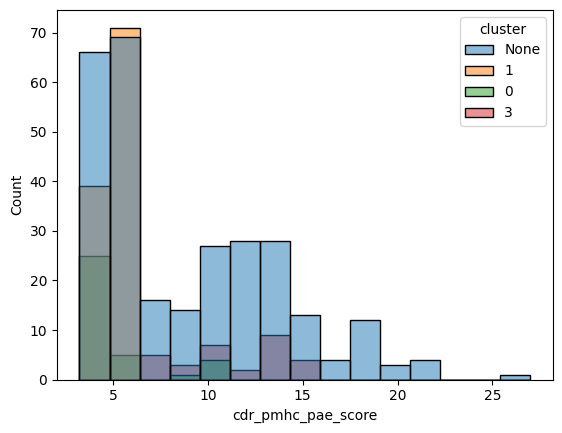
[80]:
sns.histplot(
confidence_scores_without_negatives.sort_values('status'),
x='cdr_pmhc_pae_score',
hue=confidence_scores_without_negatives.sort_values('status')['status'].fillna(''),
)
plt.show()
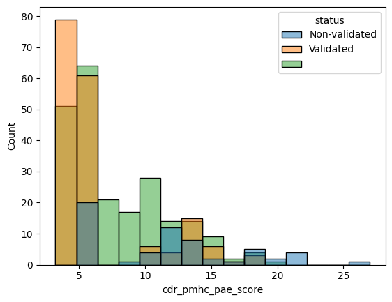
[81]:
score = 1 - roc_auc_score(
confidence_scores_without_negatives.loc[~confidence_scores_without_negatives['status'].isna(), 'status'],
confidence_scores_without_negatives.loc[
~confidence_scores_without_negatives['status'].isna(), 'cdr_pmhc_pae_score'
],
)
print(f'ROC-AUC of validation: {score:.2f}')
ROC-AUC of validation: 0.83
[82]:
confidence_scores_values_without_negatives = confidence_scores_without_negatives.select_dtypes('number')
confidence_scores_values_without_negatives = confidence_scores_values_without_negatives[
[
column_name
for column_name in confidence_scores_values_without_negatives.columns
if column_name not in ('count', 'sample', 'seed')
]
]
confidence_scores_values_without_negatives = drop_constant_columns(confidence_scores_values_without_negatives)
confidence_scores_values_without_negatives = confidence_scores_values_without_negatives.to_numpy()
[83]:
confidence_scores_values_norm_without_negatives = StandardScaler().fit_transform(
confidence_scores_values_without_negatives
)
confidence_scores_umap_without_negatives = umap.UMAP(n_jobs=1, random_state=123).fit_transform(
confidence_scores_values_norm_without_negatives
)
[84]:
plot_umap(
confidence_scores_umap_without_negatives,
confidence_scores_without_negatives['cluster'].to_numpy(),
reference=confidence_scores_without_negatives['has_structure'].to_numpy(),
title='Confidence Score',
)
plt.show()
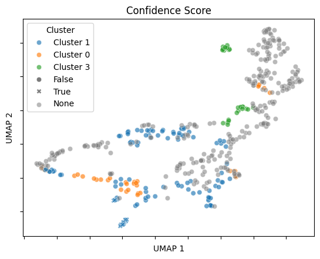
[85]:
plot_umap_with_validation(
confidence_scores_umap_without_negatives,
confidence_scores_without_negatives['status'].to_numpy(),
)
plt.show()
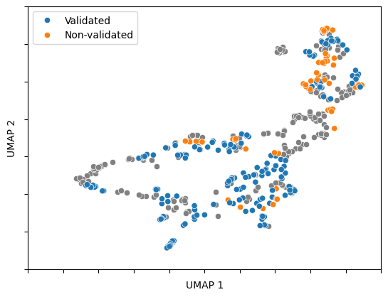
[86]:
sns.histplot(confidence_scores, x='cdr_pmhc_pae_score', hue='cluster')
plt.show()
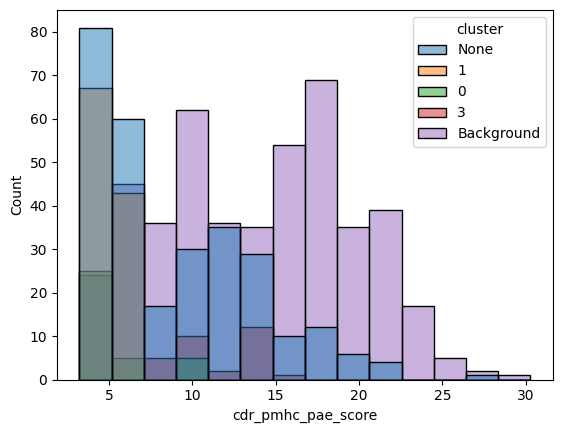
[87]:
confidence_scores_values = confidence_scores.select_dtypes('number')
confidence_scores_values = confidence_scores_values[
[column_name for column_name in confidence_scores_values.columns if column_name not in ('count', 'sample', 'seed')]
]
confidence_scores_values = drop_constant_columns(confidence_scores_values)
confidence_scores_values = confidence_scores_values.to_numpy()
[88]:
confidence_scores_values_norm = StandardScaler().fit_transform(confidence_scores_values)
confidence_scores_umap = umap.UMAP(n_jobs=1, random_state=123).fit_transform(confidence_scores_values_norm)
[89]:
plot_umap(
confidence_scores_umap,
confidence_scores['cluster'].to_numpy(),
reference=confidence_scores['has_structure'].to_numpy(),
title='Confidence Score',
)
plt.show()
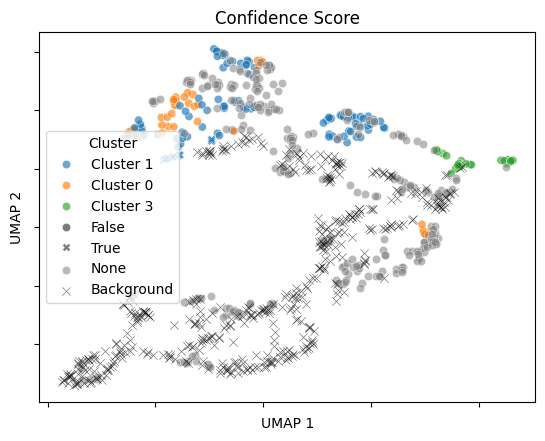
[90]:
plot_umap_with_validation(
confidence_scores_umap,
confidence_scores['status'].to_numpy(),
background=(confidence_scores['cluster'] == 'Background').to_numpy(),
)
plt.show()
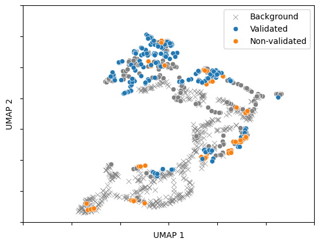
Structural Features
[91]:
bmlf_structure_features = pd.read_csv('../data/processed/tcr_pmhc_structural_features.csv').merge(
bmlf_structures, how='inner', left_on='name', right_index=True
)
bmlf_structure_features['experimental_structure'] = True
[92]:
structure_features = pd.read_csv('../data/processed/predicted_af3_af3_tcrmodel2_structural_features_dash_bmlf.csv')
structure_features['experimental_structure'] = False
[93]:
structure_features = pd.concat([structure_features, bmlf_structure_features]).reset_index(drop=True)
[94]:
structure_features = structure_features.merge(dash_bmlf, how='outer', left_on='name', right_on='id')
structure_features['cluster'] = structure_features['cluster'].fillna('Background')
structure_features.loc[structure_features['experimental_structure'], 'cluster'] = None
[95]:
structure_features = structure_features.merge(
sequences_with_negatives[['id', 'label']], how='left', left_on='name', right_on='id'
)
structure_features_without_background = structure_features.query("cluster != 'Background'")
[96]:
structure_features_without_background_values = structure_features_without_background.select_dtypes('number')
structure_features_without_background_values = structure_features_without_background_values[
[
column_name
for column_name in structure_features_without_background_values.columns
if column_name not in ('count', 'sample', 'seed', 'label')
]
]
structure_features_without_background_values = drop_constant_columns(structure_features_without_background_values)
structure_features_without_background_values = structure_features_without_background_values.dropna()
selected_stucture_features = structure_features_without_background_values.index
structure_features_without_background_values = structure_features_without_background_values.to_numpy()
[97]:
structure_features_without_background_values_norm = StandardScaler().fit_transform(
structure_features_without_background_values
)
structure_features_without_background_umap = umap.UMAP(n_jobs=1, random_state=123).fit_transform(
structure_features_without_background_values_norm
)
[98]:
plot_umap_with_experimental_structure(
structure_features_without_background_umap,
structure_features_without_background.loc[selected_stucture_features, 'cluster'].to_numpy(),
structure_features_without_background.loc[selected_stucture_features, 'experimental_structure'].to_numpy(),
reference=structure_features_without_background.loc[selected_stucture_features, 'has_structure'].to_numpy(),
title='Structural Features',
)
plt.show()
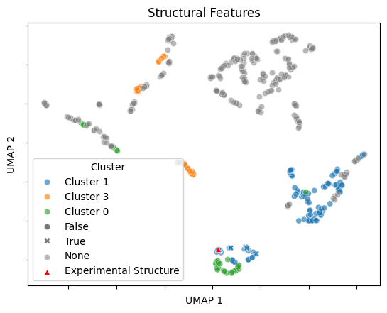
[99]:
plot_umap_with_validation(
structure_features_without_background_umap,
structure_features_without_background.loc[selected_stucture_features, 'status'].to_numpy(),
)
plt.show()
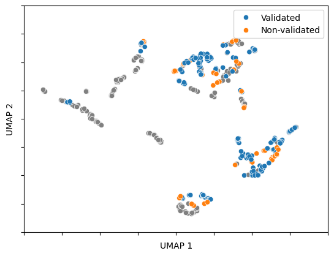
[100]:
structure_features_values = structure_features.select_dtypes('number')
structure_features_values = structure_features_values[
[
column_name
for column_name in structure_features_values.columns
if column_name not in ('count', 'sample', 'seed', 'label')
]
]
structure_features_values = drop_constant_columns(structure_features_values)
structure_features_values = structure_features_values.dropna()
selected_stucture_features = structure_features_values.index
structure_features_values = structure_features_values.to_numpy()
[101]:
structure_features_values_norm = StandardScaler().fit_transform(structure_features_values)
structure_features_umap = umap.UMAP(n_jobs=1, random_state=123).fit_transform(structure_features_values_norm)
[102]:
plot_umap_with_experimental_structure(
structure_features_umap,
structure_features.loc[selected_stucture_features, 'cluster'].to_numpy(),
structure_features.loc[selected_stucture_features, 'experimental_structure'].to_numpy(),
reference=structure_features.loc[selected_stucture_features, 'has_structure'].to_numpy(),
title='Structural Features',
)
plt.show()
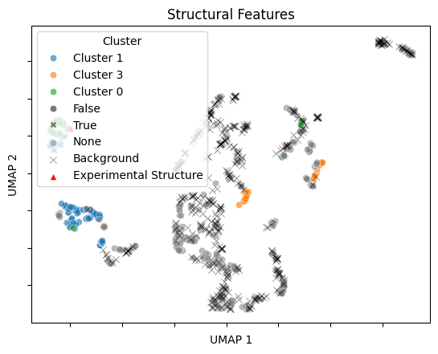
[103]:
plot_umap_with_validation(
structure_features_umap,
structure_features.loc[selected_stucture_features, 'status'].to_numpy(),
background=(structure_features.loc[selected_stucture_features, 'cluster'] == 'Background').to_numpy(),
)
plt.show()
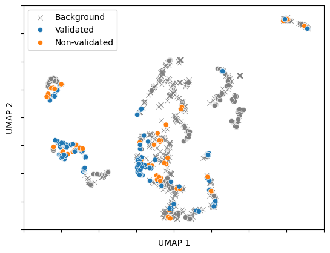
Contact Maps
[104]:
bmlf_contact_maps = pd.read_csv('../data/interim/tcr_pmhc_contacts.csv').merge(
bmlf_structures, how='inner', left_on='name', right_index=True
)
[105]:
bmlf_contact_maps['relative_pos_centre_tcr'] = bmlf_contact_maps['relative_pos_centre_tcr'].astype(int)
bmlf_contact_maps['resi_pmhc'] = bmlf_contact_maps['resi_pmhc'].astype(str).str.replace('.0', '')
[106]:
bmlf_contact_maps['chain_type_pmhc'].unique()
[106]:
array(['mhc_chain1', 'antigen_chain'], dtype=object)
[107]:
bmlf_contact_maps_antigens = bmlf_contact_maps[bmlf_contact_maps['chain_type_pmhc'] == 'antigen_chain'].copy()
[108]:
bmlf_contact_maps_antigens['relative_pos_centre_pmhc'] = bmlf_contact_maps_antigens['relative_pos_centre_pmhc'].astype(
int
)
[109]:
bmlf_contact_map_antigens_scores = (
bmlf_contact_maps_antigens.groupby('name')
.value_counts(['cdr_type', 'relative_pos_centre_tcr', 'relative_pos_centre_pmhc'])
.reset_index()
.pivot_table(
index='name',
columns=['cdr_type', 'relative_pos_centre_tcr', 'relative_pos_centre_pmhc'],
values='count',
)
.fillna(0)
.map(int)
)
bmlf_contact_map_antigens_scores.columns = [
'_'.join(str(idx) for idx in indices) for indices in bmlf_contact_map_antigens_scores.columns.to_flat_index()
]
[110]:
bmlf_contact_maps_mhc = bmlf_contact_maps[bmlf_contact_maps['chain_type_pmhc'] == 'mhc_chain1'].copy()
[111]:
bmlf_contact_map_mhc_scores = (
bmlf_contact_maps_mhc.groupby('name')
.value_counts(['cdr_type', 'relative_pos_centre_tcr', 'resi_pmhc'])
.reset_index()
.pivot_table(
index='name',
columns=['cdr_type', 'relative_pos_centre_tcr', 'resi_pmhc'],
values='count',
)
.fillna(0)
.map(int)
)
bmlf_contact_map_mhc_scores.columns = [
'_'.join(str(idx) for idx in indices) for indices in bmlf_contact_map_mhc_scores.columns.to_flat_index()
]
[112]:
bmlf_contact_map_scores = (
pd.concat([bmlf_contact_map_antigens_scores, bmlf_contact_map_mhc_scores], axis=1).fillna(0).map(int)
)
bmlf_contact_map_column_names = bmlf_contact_map_scores.columns
bmlf_contact_map_scores = bmlf_contact_map_scores.reset_index()
[113]:
contact_maps = pd.read_csv('../data/processed/predicted_af3_af3_tcrmodel2_contact_maps_dash_bmlf.csv')
[114]:
contact_maps['relative_pos_centre_tcr'] = contact_maps['relative_pos_centre_tcr'].astype(int)
[115]:
contact_maps['resi_pmhc'] = contact_maps['resi_pmhc'].astype(str).str.replace('.0', '')
[116]:
contact_maps['chain_type_pmhc'].unique()
[116]:
array(['antigen_chain', 'mhc_chain1'], dtype=object)
[117]:
contact_maps_antigens = contact_maps[contact_maps['chain_type_pmhc'] == 'antigen_chain'].copy()
[118]:
contact_maps_antigens['relative_pos_centre_pmhc'] = contact_maps_antigens['relative_pos_centre_pmhc'].astype(int)
[119]:
contact_map_antigens_scores = (
contact_maps_antigens.groupby(['name', 'seed', 'sample'])
.value_counts(['cdr_type', 'relative_pos_centre_tcr', 'relative_pos_centre_pmhc'])
.reset_index()
.pivot_table(
index=['name', 'seed', 'sample'],
columns=['cdr_type', 'relative_pos_centre_tcr', 'relative_pos_centre_pmhc'],
values='count',
)
.fillna(0)
.map(int)
)
contact_map_antigens_scores.columns = [
'_'.join(str(idx) for idx in indices) for indices in contact_map_antigens_scores.columns.to_flat_index()
]
[120]:
contact_maps_mhc = contact_maps[contact_maps['chain_type_pmhc'] == 'mhc_chain1'].copy()
[121]:
contact_map_mhc_scores = (
contact_maps_mhc.groupby(['name', 'seed', 'sample'])
.value_counts(['cdr_type', 'relative_pos_centre_tcr', 'resi_pmhc'])
.reset_index()
.pivot_table(
index=['name', 'seed', 'sample'],
columns=['cdr_type', 'relative_pos_centre_tcr', 'resi_pmhc'],
values='count',
)
.fillna(0)
.map(int)
)
contact_map_mhc_scores.columns = [
'_'.join(str(idx) for idx in indices) for indices in contact_map_mhc_scores.columns.to_flat_index()
]
[122]:
contact_map_scores = pd.concat([contact_map_antigens_scores, contact_map_mhc_scores], axis=1).fillna(0).map(int)
contact_map_scores = drop_constant_columns(contact_map_scores)
contact_map_column_names = contact_map_scores.columns
contact_map_scores = contact_map_scores.reset_index()
[123]:
bmlf_contact_map_scores['experimental_structure'] = True
contact_map_scores['experimental_structure'] = False
contact_map_scores = pd.concat([contact_map_scores, bmlf_contact_map_scores]).reset_index(drop=True)
feature_columns = [
column
for column in contact_map_scores.columns
if column not in ('name', 'seed', 'sample', 'experimental_structure')
]
contact_map_scores[feature_columns] = contact_map_scores[feature_columns].fillna(0).astype(int)
[124]:
contact_map_scores = contact_map_scores.merge(dash_bmlf, how='outer', left_on='name', right_on='id')
contact_map_scores['cluster'] = contact_map_scores['cluster'].fillna('Background')
contact_map_scores.loc[contact_map_scores['experimental_structure'], 'cluster'] = None
[125]:
contact_map_scores = contact_map_scores.merge(
sequences_with_negatives[['id', 'label']], how='left', left_on='name', right_on='id'
)
contact_map_scores_without_background = contact_map_scores.query("cluster != 'Background'")
[126]:
contact_map_scores_without_background_norm = StandardScaler().fit_transform(
contact_map_scores_without_background[contact_map_column_names]
)
[127]:
contact_map_scores_without_background_umap = umap.UMAP(n_jobs=1, random_state=123).fit_transform(
contact_map_scores_without_background_norm
)
[128]:
plot_umap_with_experimental_structure(
contact_map_scores_without_background_umap,
contact_map_scores_without_background['cluster'].to_numpy(),
contact_map_scores_without_background['experimental_structure'].to_numpy(),
reference=contact_map_scores_without_background['has_structure'].to_numpy(),
title='Contact Maps',
)
plt.show()
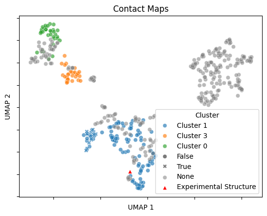
[129]:
plot_umap_with_validation(
contact_map_scores_without_background_umap,
contact_map_scores_without_background['status'].to_numpy(),
)
plt.show()
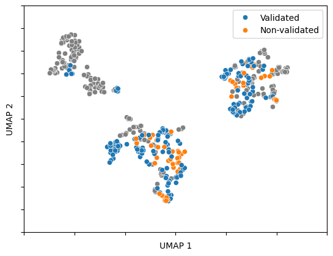
[130]:
contact_map_scores_norm = StandardScaler().fit_transform(contact_map_scores[contact_map_column_names])
[131]:
contact_map_umap = umap.UMAP(n_jobs=1, random_state=123).fit_transform(contact_map_scores_norm)
[132]:
plot_umap_with_experimental_structure(
contact_map_umap,
contact_map_scores['cluster'].to_numpy(),
contact_map_scores['experimental_structure'].to_numpy(),
reference=contact_map_scores['has_structure'].to_numpy(),
title='Contact Maps',
)
plt.show()
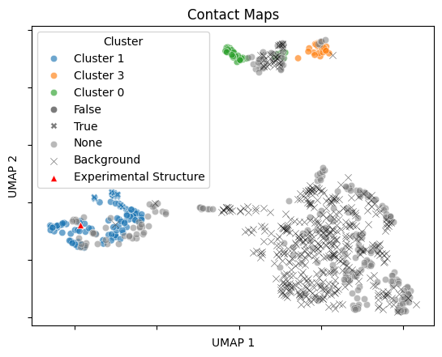
[133]:
plot_umap_with_validation(
contact_map_umap,
contact_map_scores['status'].to_numpy(),
background=(contact_map_scores['cluster'] == 'Background').to_numpy(),
)
plt.show()
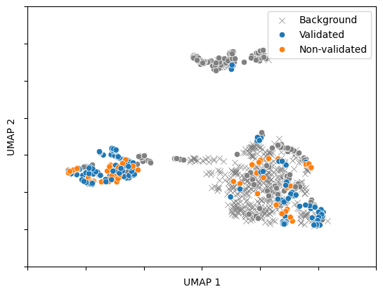
Interactions
[134]:
bmlf_interactions = pd.read_csv('../data/processed/tcr_pmhc_interactions.csv').merge(
bmlf_structures, how='inner', left_on='name', right_index=True
)
[135]:
bmlf_interactions_scores = (
bmlf_interactions.groupby('name')['type']
.value_counts()
.reset_index()
.pivot_table(index='name', columns='type', values='count')
.fillna(0)
.map(int)
.reset_index()
)
[136]:
interactions = pd.read_csv('../data/processed/predicted_af3_af3_tcrmodel2_interactions_dash_bmlf.csv')
[137]:
interactions_scores = (
interactions.groupby(['name', 'seed', 'sample'])['type']
.value_counts()
.reset_index()
.pivot_table(index=['name', 'seed', 'sample'], columns='type', values='count')
.fillna(0)
.map(int)
)
interactions_scores_column_names = interactions_scores.columns
interactions_scores = interactions_scores.reset_index()
[138]:
interactions_scores['experimental_structure'] = False
bmlf_interactions_scores['experimental_structure'] = True
interactions_scores = pd.concat([interactions_scores, bmlf_interactions_scores]).reset_index(drop=True)
interactions_scores[interactions_scores_column_names] = (
interactions_scores[interactions_scores_column_names].fillna(0).map(int)
)
[139]:
interactions_scores = interactions_scores.merge(dash_bmlf, how='outer', left_on='name', right_on='id')
interactions_scores['cluster'] = interactions_scores['cluster'].fillna('Background')
interactions_scores.loc[interactions_scores['experimental_structure'], 'cluster'] = None
interactions_scores[interactions_scores_column_names] = interactions_scores[interactions_scores_column_names].fillna(0)
[140]:
interactions_scores = interactions_scores.merge(
sequences_with_negatives[['id', 'label']], how='left', left_on='name', right_on='id'
)
interactions_scores_without_background = interactions_scores.query("cluster != 'Background'")
[141]:
interactions_scores_without_background_norm = StandardScaler().fit_transform(
interactions_scores_without_background[interactions_scores_column_names]
)
[142]:
interactions_scores_without_background_umap = umap.UMAP(n_jobs=1, random_state=123).fit_transform(
interactions_scores_without_background_norm
)
[143]:
plot_umap_with_experimental_structure(
interactions_scores_without_background_umap,
interactions_scores_without_background['cluster'].to_numpy(),
interactions_scores_without_background['experimental_structure'].to_numpy(),
reference=interactions_scores_without_background['has_structure'].to_numpy(),
title='Interactions',
)
plt.show()
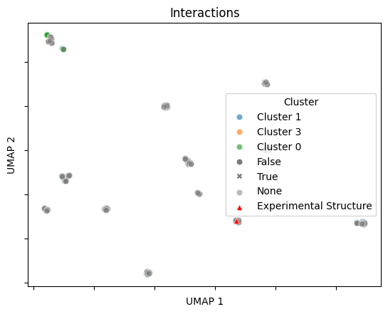
[144]:
plot_umap_with_validation(
interactions_scores_without_background_umap,
interactions_scores_without_background['status'].to_numpy(),
)
plt.show()
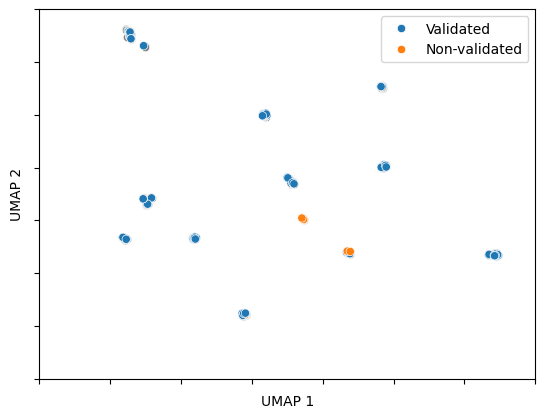
[145]:
interactions_scores_norm = StandardScaler().fit_transform(interactions_scores[interactions_scores_column_names])
[146]:
interactions_umap = umap.UMAP(n_jobs=1, random_state=123).fit_transform(interactions_scores_norm)
[147]:
plot_umap_with_experimental_structure(
interactions_umap,
interactions_scores['cluster'].to_numpy(),
interactions_scores['experimental_structure'].to_numpy(),
reference=interactions_scores['has_structure'].to_numpy(),
title='Interactions',
)
plt.show()
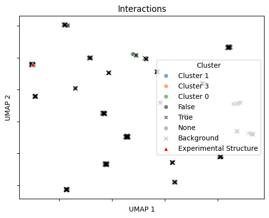
[148]:
plot_umap_with_validation(
interactions_umap,
interactions_scores['status'].to_numpy(),
background=(interactions_scores['cluster'] == 'Background').to_numpy(),
)
plt.show()
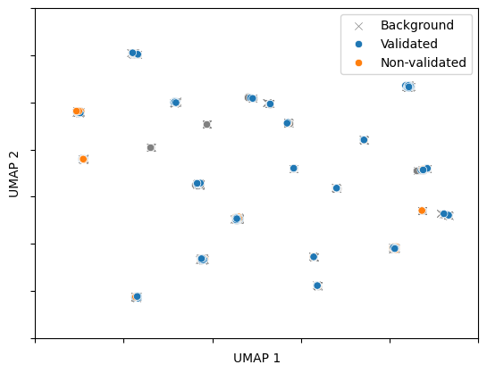
Shape complementarity and buried surface area
[149]:
bmlf_sc_and_bsa = pd.read_csv('../data/processed/tcr_pmhc_sc_and_bsa.csv').merge(
bmlf_structures, how='inner', left_on='name', right_index=True
)
[150]:
sc_and_bsa = pd.read_csv('../data/processed/predicted_af3_af3_tcrmodel2_sc_and_bsa_dash_bmlf.csv')
[151]:
bmlf_sc_and_bsa['experimental_structure'] = True
sc_and_bsa['experimental_structure'] = False
sc_and_bsa = pd.concat([sc_and_bsa, bmlf_sc_and_bsa]).reset_index(drop=True)
[152]:
sc_and_bsa = sc_and_bsa.merge(dash_bmlf, how='outer', left_on='name', right_on='id')
sc_and_bsa['cluster'] = sc_and_bsa['cluster'].fillna('Background')
sc_and_bsa.loc[sc_and_bsa['experimental_structure'], 'cluster'] = None
[153]:
sc_and_bsa = sc_and_bsa.merge(sequences_with_negatives[['id', 'label']], how='left', left_on='name', right_on='id')
sc_and_bsa_without_background = sc_and_bsa.query("cluster != 'Background'")
[154]:
sc_without_background = sc_and_bsa_without_background[[col for col in sc_and_bsa if col != 'bsa']]
bsa_without_background = sc_and_bsa_without_background[[col for col in sc_and_bsa if col != 'sc']]
[155]:
sc_without_background_norm = (
(sc_without_background['sc'] - sc_without_background['sc'].mean()) / sc_without_background['sc'].std()
).to_numpy()
bsa_without_background_norm = (
(bsa_without_background['bsa'] - bsa_without_background['bsa'].mean()) / bsa_without_background['bsa'].std()
).to_numpy()
[156]:
fig, axes = plt.subplots(1, 2, figsize=(12, 5))
sns.histplot(
x=sc_without_background_norm, hue=sc_without_background['cluster'], multiple='stack', stat='probability', ax=axes[0]
)
axes[0].set_xlabel('Shape Complementarity (Normalised)')
sns.histplot(
x=bsa_without_background_norm,
hue=bsa_without_background['cluster'],
multiple='stack',
stat='probability',
ax=axes[1],
)
axes[1].set_xlabel('Buried Surface Area (Normalised)')
plt.show()
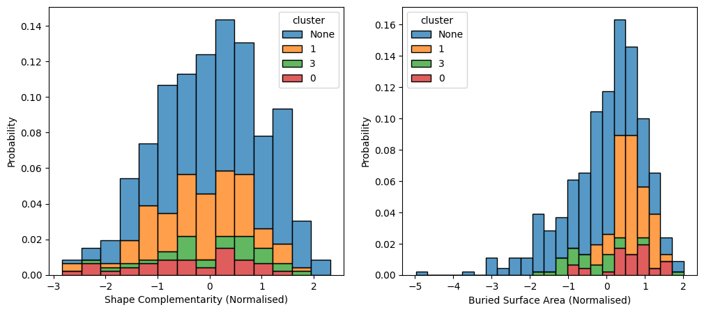
[157]:
fig, axes = plt.subplots(1, 2, figsize=(12, 5))
sns.histplot(
x=sc_without_background_norm,
hue=sc_without_background['status'].fillna(''),
multiple='stack',
stat='probability',
ax=axes[0],
)
axes[0].set_xlabel('Shape Complementarity (Normalised)')
sns.histplot(
x=bsa_without_background_norm,
hue=sc_without_background['status'].fillna(''),
multiple='stack',
stat='probability',
ax=axes[1],
)
axes[1].set_xlabel('Buried Surface Area (Normalised)')
plt.show()
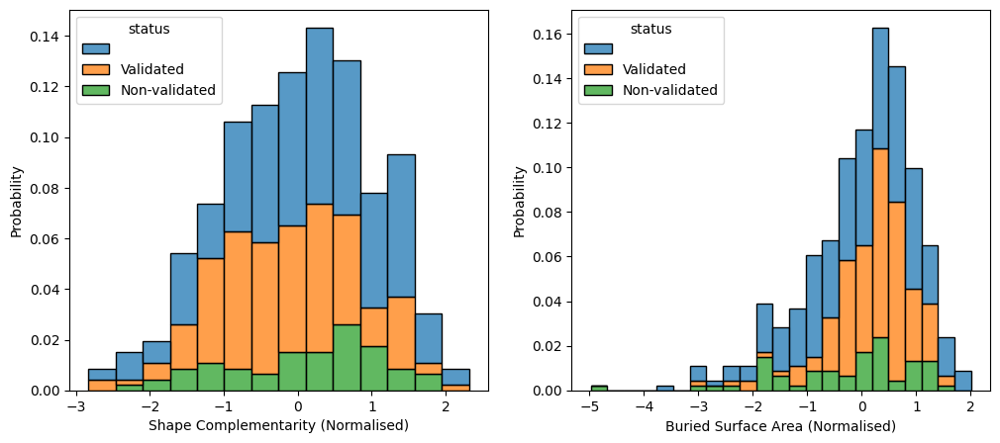
[158]:
sc = sc_and_bsa[[col for col in sc_and_bsa if col != 'bsa']]
bsa = sc_and_bsa[[col for col in sc_and_bsa if col != 'sc']]
[159]:
sc_norm = ((sc['sc'] - sc['sc'].mean()) / sc['sc'].std()).to_numpy()
bsa_norm = ((bsa['bsa'] - bsa['bsa'].mean()) / bsa['bsa'].std()).to_numpy()
[160]:
fig, axes = plt.subplots(1, 2, figsize=(12, 5))
sns.histplot(x=sc_norm, hue=sc['cluster'], multiple='stack', stat='probability', ax=axes[0])
axes[0].set_xlabel('Shape Complementarity (Normalised)')
sns.histplot(x=bsa_norm, hue=bsa['cluster'], multiple='stack', stat='probability', ax=axes[1])
axes[1].set_xlabel('Buried Surface Area (Normalised)')
plt.show()
[161]:
fig, axes = plt.subplots(1, 2, figsize=(12, 5))
sns.histplot(x=sc_norm, hue=sc['status'].fillna(''), multiple='stack', stat='probability', ax=axes[0])
axes[0].set_xlabel('Shape Complementarity (Normalised)')
sns.histplot(x=bsa_norm, hue=bsa['status'].fillna(''), multiple='stack', stat='probability', ax=axes[1])
axes[1].set_xlabel('Buried Surface Area (Normalised)')
plt.show()
Combined
[162]:
combined_scores = (
structure_features.merge(contact_map_scores, how='inner')
.merge(interactions_scores, how='inner')
.merge(sc_and_bsa, how='inner')
)
combined_scores_without_background = combined_scores.query("cluster != 'Background'")
[163]:
combined_scores_without_background_values = combined_scores_without_background.select_dtypes('number')
combined_scores_without_background_values = combined_scores_without_background_values[
[
column_name
for column_name in combined_scores_without_background_values.columns
if column_name not in ('count', 'sample', 'seed', 'label')
]
]
combined_scores_without_background_values = combined_scores_without_background_values.fillna(0.0)
combined_scores_without_background_values = combined_scores_without_background_values.to_numpy()
[164]:
combined_scores_without_background_values_norm = StandardScaler().fit_transform(
combined_scores_without_background_values
)
[165]:
combined_without_background_umap = umap.UMAP(n_jobs=1, random_state=123).fit_transform(
combined_scores_without_background_values_norm
)
[ ]:
plot_umap_with_experimental_structure(
combined_without_background_umap,
combined_scores_without_background['cluster'].to_numpy(),
combined_scores_without_background['experimental_structure'].to_numpy(),
reference=combined_scores_without_background['has_structure'].to_numpy(),
title='Combined Structural Features',
)
plt.show()
[167]:
plot_umap_with_validation(
combined_without_background_umap,
combined_scores_without_background['status'].to_numpy(),
)
plt.show()
[168]:
combined_scores_values = combined_scores.select_dtypes('number')
combined_scores_values = combined_scores_values[
[
column_name
for column_name in combined_scores_values.columns
if column_name not in ('count', 'sample', 'seed', 'label')
]
]
combined_scores_values = combined_scores_values.fillna(0.0)
combined_scores_values = combined_scores_values.to_numpy()
[169]:
combined_scores_values_norm = StandardScaler().fit_transform(combined_scores_values)
[170]:
combined_umap = umap.UMAP(n_jobs=1, random_state=123).fit_transform(combined_scores_values_norm)
[ ]:
plot_umap_with_experimental_structure(
combined_umap,
combined_scores['cluster'].to_numpy(),
combined_scores['experimental_structure'].to_numpy(),
reference=combined_scores['has_structure'].to_numpy(),
title='Combined Structural Features',
)
plt.show()
[172]:
plot_umap_with_validation(
combined_umap,
combined_scores['status'].to_numpy(),
background=(combined_scores['cluster'] == 'Background').to_numpy(),
)
plt.show()
Reversing the structural clusters to the sequence space
[ ]:
min_cluster_sizes = list(range(2, 30))
num_clusters = []
for min_cluster_size in min_cluster_sizes:
structural_clusters = HDBSCAN(min_cluster_size=min_cluster_size).fit_predict(
combined_scores_values_norm[combined_scores['label'].fillna(0).astype(bool)]
)
num_clusters.append(len(np.unique(structural_clusters[structural_clusters != -1])))
plt.plot(min_cluster_sizes, num_clusters)
plt.xlabel('Minimum cluster size')
plt.ylabel('Number of clusters')
plt.show()
[174]:
structural_clusters = (
HDBSCAN(min_cluster_size=8)
.fit_predict(combined_scores_values_norm[combined_scores['label'].fillna(0).astype(bool)])
.astype(str)
)
structural_clusters[structural_clusters == '-1'] = 'None'
combined_scores['structural_cluster'] = 'Background'
combined_scores.loc[combined_scores['experimental_structure'], 'structural_cluster'] = None
combined_scores.loc[combined_scores['label'].fillna(0).astype(bool), 'structural_cluster'] = structural_clusters
[ ]:
plot_umap_with_experimental_structure(
combined_without_background_umap,
combined_scores.query("cluster != 'Background'")['structural_cluster'].to_numpy(),
combined_scores.query("cluster != 'Background'")['experimental_structure'].to_numpy(),
reference=combined_scores.query("cluster != 'Background'")['has_structure'].to_numpy(),
title='Combined Structural Features',
)
plt.show()
[ ]:
plot_umap_with_experimental_structure(
combined_umap,
combined_scores['structural_cluster'].to_numpy(),
combined_scores['experimental_structure'].to_numpy(),
reference=combined_scores['has_structure'].to_numpy(),
title='Combined Structural Features',
)
plt.show()
[177]:
agg_structural_clusters = (
combined_scores[combined_scores['label'].fillna(0).astype(bool)].groupby('name')['structural_cluster'].apply(list)
)
[178]:
def count_clusters(clusters: list) -> dict[str, int]:
count = {}
for cluster in clusters:
if cluster not in count:
count[cluster] = 1
else:
count[cluster] += 1
return count
agg_structural_clusters = agg_structural_clusters.apply(count_clusters)
[179]:
def get_consensus(cluster_counts: dict) -> str:
"""Get the consensus clustuer from the counts.
Note: does not handle ties.
"""
max_count = 0
consensus_cluster = None
for cluster, count in cluster_counts.items():
if count > max_count:
consensus_cluster = cluster
max_count = count
return consensus_cluster
agg_structural_clusters = agg_structural_clusters.apply(get_consensus)
[180]:
agg_structural_clusters = agg_structural_clusters.map(
lambda cluster: (
cluster
if cluster
in {
cluster_name
for cluster_name, valid in (agg_structural_clusters.value_counts() >= MIN_CLUSTER_SIZE).to_dict().items()
if valid
}
else 'None'
)
)
[181]:
dash_bmlf = dash_bmlf.merge(agg_structural_clusters.to_frame(), how='left', left_on='id', right_index=True)
[ ]:
plot_umap(
sequence_umap,
dash_bmlf['structural_cluster'],
reference=dash_bmlf['has_structure'],
title='Sequences with structural clusters',
)
plt.show()
[ ]:
dash_bmlf.query("structural_cluster != 'None'").groupby('structural_cluster').apply(
make_logo_plot, include_groups=False
)
[184]:
num_sequences = len(dash_bmlf)
num_seq_clustered = len(dash_bmlf.query("cluster != 'None'"))
seq_cluster = (num_seq_clustered / num_sequences) * 100
print(f'Percent clustered by sequences: {seq_cluster:.2f}% ({num_seq_clustered} of {num_sequences})')
num_struct_clustered = len(dash_bmlf.query("structural_cluster != 'None'"))
struct_cluster = (num_struct_clustered / num_sequences) * 100
print(f'Percent clustered by structures: {struct_cluster:.2f}% ({num_struct_clustered} of {num_sequences})')
num_struct_no_seq = len(dash_bmlf.query("cluster == 'None' and structural_cluster != 'None'"))
num_no_seq = len(dash_bmlf.query("cluster == 'None'"))
struct_cluster_no_seq = (num_struct_no_seq / num_no_seq) * 100
print(
f'Percent clustered by structures not clustered by sequences: {struct_cluster_no_seq:.2f}% ({num_struct_no_seq} of '
f'{num_no_seq})'
)
num_seq_no_struct = len(dash_bmlf.query("cluster != 'None' and structural_cluster == 'None'"))
seq_cluster_no_struct = (num_seq_no_struct / num_seq_clustered) * 100
print(
f'Percent clustered by sequences not clustered by structures: {seq_cluster_no_struct:.2f}% ({num_seq_no_struct} of '
f'{num_seq_clustered})'
)
num_no_cluster = len(dash_bmlf.query("cluster == 'None' and structural_cluster == 'None'"))
no_cluster = (num_no_cluster / num_sequences) * 100
print(f'Percent not clustered: {no_cluster:.2f}% ({num_no_cluster} of {num_sequences})')
print()
print(f"Adjusted Rand Index: {adjusted_rand_score(dash_bmlf['cluster'], dash_bmlf['structural_cluster']):.2f}")
print(f"V-measure: {v_measure_score(dash_bmlf['cluster'], dash_bmlf['structural_cluster']):.2f}")
Percent clustered by sequences: 38.04% (35 of 92)
Percent clustered by structures: 43.48% (40 of 92)
Percent clustered by structures not clustered by sequences: 21.05% (12 of 57)
Percent clustered by sequences not clustered by structures: 20.00% (7 of 35)
Percent not clustered: 48.91% (45 of 92)
Adjusted Rand Index: 0.54
V-measure: 0.64
pp65 Epitope Analysis
[185]:
dash_pp65 = dash.query("epitope == 'pp65'").copy()
[186]:
distance_matrix = calculate_sequence_distances(dash_pp65['cdr3_a_aa'].tolist(), dash_pp65['cdr3_b_aa'].tolist())
cdr3_distance_matrix = distance_matrix + distance_matrix.T
[187]:
clusters = AgglomerativeClustering(
n_clusters=None, distance_threshold=6, compute_full_tree=True, linkage='complete', metric='precomputed'
).fit_predict(cdr3_distance_matrix)
[188]:
cluster_counts = {}
for cluster in clusters:
if cluster not in cluster_counts:
cluster_counts[cluster] = 1
else:
cluster_counts[cluster] += 1
cluster_order = [
cluster
for cluster, _ in sorted(
sorted(cluster_counts.items(), key=lambda item: item[0]), key=lambda item: item[1], reverse=True
)
]
[189]:
new_order = []
for cluster in cluster_order:
(indices,) = np.where(clusters == cluster)
new_order.extend(indices)
new_order = np.array(new_order)
[190]:
unique_clusters, inverse = np.unique(clusters[new_order], return_inverse=True)
palette = sns.color_palette('tab20')
num_colours = len(palette)
cluster_to_colour = {cluster: palette[i % num_colours] for i, cluster in enumerate(unique_clusters)}
cluster_colours = np.array([[cluster_to_colour[cluster]] for cluster in clusters[new_order]])
[191]:
unique_subjects = sorted(dash_pp65['subject'].unique())
subject_to_colour = {subject: palette[i % num_colours] for i, subject in enumerate(unique_subjects)}
subject_colours = np.array([[subject_to_colour[subject]] for subject in dash_pp65['subject'].to_numpy()[new_order]])
[ ]:
plot_sequence_distances(distance_matrix, cluster_colours, cluster_order, cluster_counts, new_order, subject_colours)
plt.show()
[193]:
plt.figure(figsize=(12, 6))
plt.bar([str(cluster) for cluster in cluster_order], [cluster_counts[cluster] for cluster in cluster_order])
plt.xlabel('Cluster', fontsize=12)
plt.ylabel('Number of TCRs', fontsize=12)
plt.axhline(MIN_CLUSTER_SIZE - 1, color='red', linestyle='--')
plt.show()
[194]:
clusters_filtered = [cluster if cluster_counts[cluster] >= MIN_CLUSTER_SIZE else -1 for cluster in clusters]
[195]:
dash_pp65['cluster'] = clusters_filtered
dash_pp65['cluster'] = dash_pp65['cluster'].astype(str)
dash_pp65['cluster'] = dash_pp65['cluster'].replace('-1', 'None')
[196]:
dash_pp65.query("cluster != 'None'").groupby('cluster').apply(make_logo_plot, include_groups=False)
[196]:
| id | subject | epitope | count | v_a_gene | j_a_gene | cdr3_a_aa | v_b_gene | j_b_gene | cdr3_b_aa | clone_id | |
|---|---|---|---|---|---|---|---|---|---|---|---|
| cluster |
[197]:
sequence_umap = umap.UMAP(n_jobs=1, random_state=123).fit_transform(distance_matrix)
[ ]:
plot_umap(sequence_umap, dash_pp65['cluster'], title='Sequences')
plt.show()
[199]:
fig, axes = plt.subplots(1, 3, figsize=(15, 5))
fig.suptitle('Effect of CDR3 length on clustering')
sns.scatterplot(
x=sequence_umap[:, 0], y=sequence_umap[:, 1], hue=dash_pp65['cdr3_a_aa'].str.len().astype(str), ax=axes[0]
)
axes[0].legend(title=r'CDR3$\alpha$')
axes[0].set_yticklabels([])
axes[0].set_xticklabels([])
axes[0].set_xlabel('UMAP 1')
axes[0].set_ylabel('UMAP 2')
sns.scatterplot(
x=sequence_umap[:, 0], y=sequence_umap[:, 1], hue=dash_pp65['cdr3_b_aa'].str.len().astype(str), ax=axes[1]
)
axes[1].legend(title=r'CDR3$\beta$')
axes[1].set_yticklabels([])
axes[1].set_xticklabels([])
axes[1].set_xlabel('UMAP 1')
axes[1].set_ylabel('UMAP 2')
sns.scatterplot(
x=sequence_umap[:, 0],
y=sequence_umap[:, 1],
hue=(dash_pp65['cdr3_a_aa'].str.len() + dash_pp65['cdr3_b_aa'].str.len()).astype(str),
ax=axes[2],
)
axes[2].legend(title=r'Combined')
axes[2].set_yticklabels([])
axes[2].set_xticklabels([])
axes[2].set_xlabel('UMAP 1')
axes[2].set_ylabel('UMAP 2')
plt.show()
[200]:
sequences_with_negatives_pp65 = sequences_with_negatives.query("name == 'pp65'")
[201]:
sequences_with_negatives_pp65.merge(dash_pp65[['id', 'cluster']], how='left', on='id')
sequences_with_negatives_pp65 = sequences_with_negatives_pp65.merge(dash_pp65[['id', 'cluster']], how='left', on='id')
sequences_with_negatives_pp65['cluster'] = sequences_with_negatives_pp65['cluster'].fillna('Background')
[202]:
distance_matrix = calculate_sequence_distances(
sequences_with_negatives_pp65['cdr3_alpha'].tolist(), sequences_with_negatives_pp65['cdr3_beta'].tolist()
)
cdr3_distance_matrix = distance_matrix + distance_matrix.T
[203]:
sequence_umap = umap.UMAP(n_jobs=1, random_state=123).fit_transform(distance_matrix)
[ ]:
plot_umap(sequence_umap, sequences_with_negatives_pp65['cluster'], title='Sequences')
plt.show()